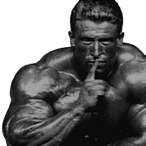

Dorian Andrew Mientjez Yates is an English retired professional bodybuilder and a six-time Mr. Olympia champion. He won the title consecutively from 1992 to 1997 and became known by the nickname "The Shadow" for his discreet approach to competition, often appearing at major events without prior public confirmation
I grew up in a small farm in rural Staffordshire, located in central England. I was surrounded by horses, chickens, dogs and many other animals and pets. My father died when I was 13. After he passed away, my mother decided that she, my sister and I would leave Staffordshire and move to England’s second largest city, Birmingham. Birmingham is an industrial city and it is a good town-though sometimes a bit too hustle and bustle for me. After three years, my mother missed the rural lifestyle and decided to move back to Staffordshire. I had adapted quickly to the city life and I have decided to stay in Birmingham (I definitely consider myself a city person-although I still have love for all kinds of animals and wildlife).

Click the button to generate a quote